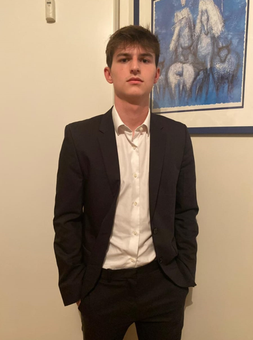
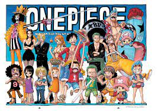

I am a first year student at IESEG, I am passionate about sport, manga and music. I really like marketing and hope to continue my studies in this direction
I am sporty, I really like practicing and watching sports. Right now I'm watching Roland Garros. I was able to go there last year. I have been playing tennis since I was little and I also played football in a team.
To keep me informed about my favorite tennis players and the tournament
I've been reading manga since I was little, it allows me to escape. I also watch anime, my favorite manga is one piece.

I have a lot of goals. I would like to continue building a great network at IESEG because I made some exceptional friends this year, I would like to pass my second year and be able to go on exchange to a country that inspires me.